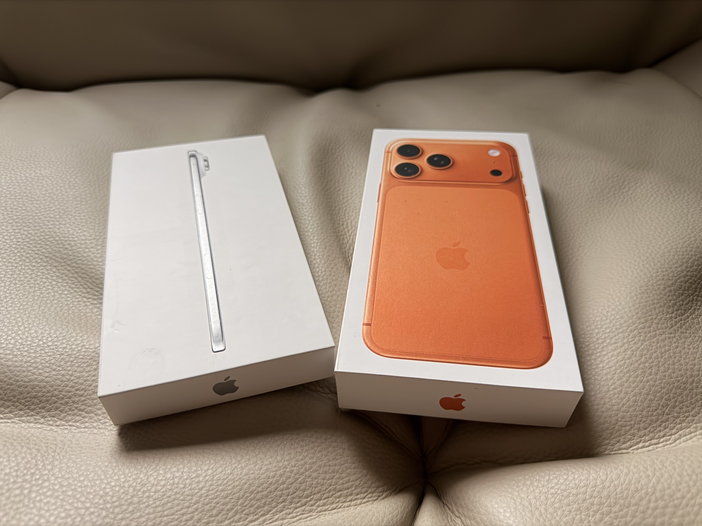
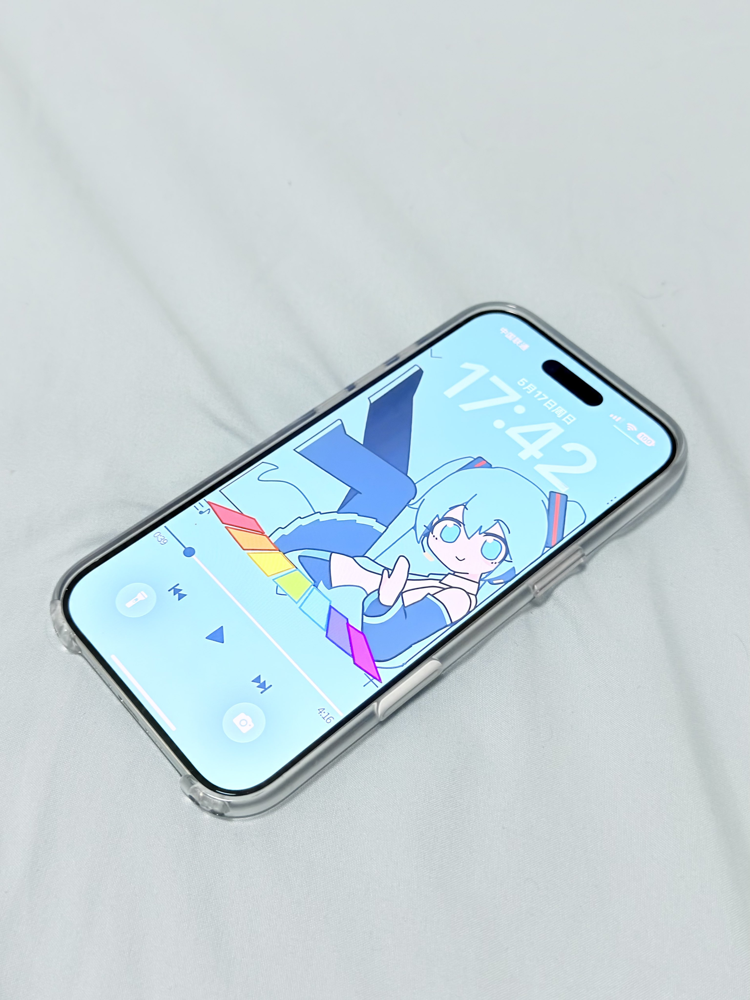
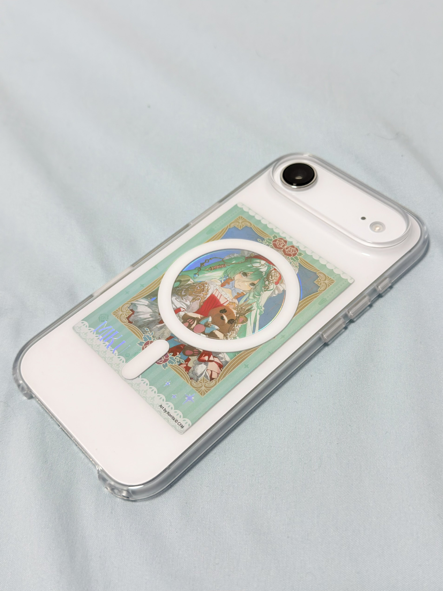

🏳️⚧️凌嘉欣🍥
@LingJiaXin233
@CldGeo 我觉得Air应该裸机使用（（（



九鸟
@CldGeo
特地买了云白色的iPhone Air～这两天深度体验了一下！
在iPhone Air上，我尽可能地少装了软件，让体验也变得更“Air”一些。
结果出乎意料！我非常享受只用一只手便能毫不费力操控手机的快感，不论是在床上抬腕使用还是出门走在路上，它都不会像Pro Max一样累手。
iPhone Air做了减法。我也一样。 https://t.co/F4xQTR5AtR https://t.co/j0iiHMAWIW